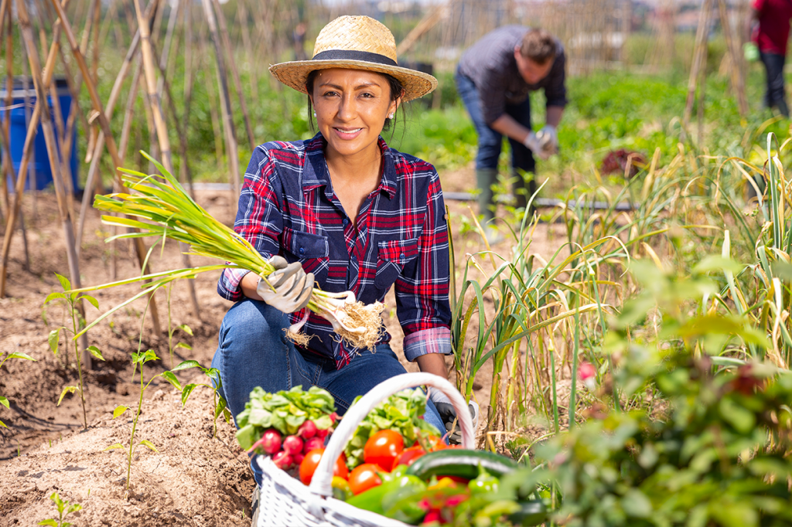
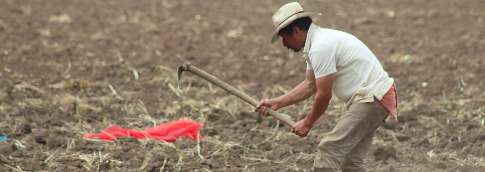
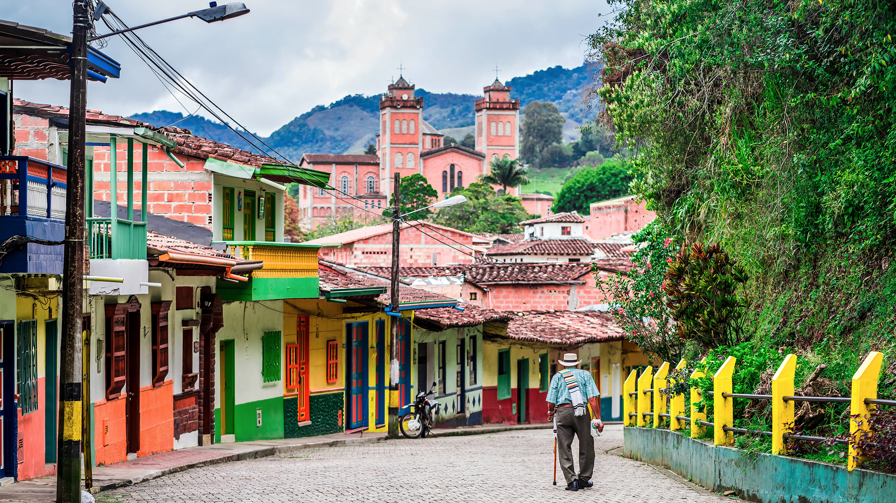

Somos una microempresa que, a travéz de la tecnplogia permitimos que la gente del Calvario los productos que suelen vender de forma directa, sencilla, y sin intermediarios.
Nuestro proyecto es un emprendimiento que elimina el uso de intermediarios en el proceso de compra y venta de productos agrícolas a través de nuestra aplicación web, permitiendo así la comercialización directa entre el surtidor y comprador, acordando el punto de reunión en el que se entregarán los productos solicitados, y así mejorar los ingresos y la calidad de vida de los surtidores
Tenemos como objetivo el expandir nuestro modelo de servicio a toda Colombia, y con esto mejorar el estado de vida de los campesionos colombianos, siendo el Calvario nuestro punto de partida hacia una Colombia que tiene al campo como un sector que también puede mejorar la ecónomia y calidad de vida de los ciudadanos a travez de la tecnologia
